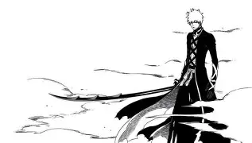

Bleach Mangá

Bleach conta a história de Ichigo Kurosaki, um adolescente que pode ver fantasmas e acaba se tornando um Shinigami Substituto após receber os poderes de Rukia Kuchiki para proteger sua família de monstros devoradores de almas chamados Hollows. A trama se expande quando Ichigo e seus amigos invadem a Soul Society (o mundo espiritual) para resgatar Rukia de uma execução injusta, revelando uma conspiração liderada pelo capitão traidor Sosuke Aizen, que busca transcender os limites de deuses e humanos. Após derrotar Aizen em uma batalha épica que custa seus poderes, Ichigo eventualmente os recupera para enfrentar a ameaça final: o retorno dos Quincies, liderados por Yhwach, na Guerra Sangrenta dos Mil Anos. O mangá explora a linhagem única de Ichigo — que carrega sangue de Shinigami, Hollow e Quincy — e culmina em um confronto que decide o destino de todos os mundos, encerrando com um futuro de paz onde uma nova geração de heróis começa a surgir.
| Gênero | Ação, Aventura, Comédia, Fantasia, Shounen |
|---|---|
| Autor | Tite Kubo |
| Editora | Shonen Jump |
| Data de Lançamento | 7 de agosto de 2001 |